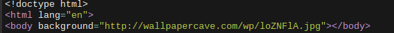
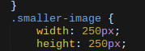
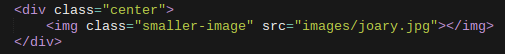
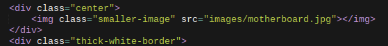

The finger that's pointing above is showing my navbar which allows me to travel between my pages. Easy way to go to different pages without having to type the website back in each time!
  After setting up the navbar and making it the way I wanted. I started messing around with the background which led me to want to add a image as my background instead as you can see above. I tend to start with the more flashy stuff instead of typing right off the bat I started adding images as well, I was trying to find the best size for the image.
The next thing I did was of course center my image, I made a div for it and added a class inside of it which made it centered I then also made another class so the image wouldn't be big "smaller". I also then added for the text below a class so it made an outline on it so it pops out more also had a class for it.